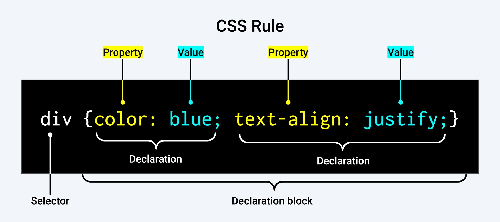

Prework Study Guide

✨ Open the Console to See What's Happening ✨
HTML
- The head element contains information about the webpage.
- The body element represents the visible content shown to the user.
- "< ! DOCTYPE html >" is used to let the web browser know we are using HTML
- (< br >) is used for line breaks
- "< ol >< /ol >" is used for Ordered Lists
- "< ul >< /ul >" is used for Unordered lists
- There are 6 headings 1 is the biggest and is used for the headings the others are subheadings
- "< p >" is used for paragraphs
- "< span >" is used to seperate small pieces of content that are on the same line
- "< em > < /em >" is used for italic
- "< strong > < /strong >" is used for bold emphasis
- "< br >" is used for a line break and you can use two to start a paragraph and skip a line in between paragraphs doesn't need a closing
- "< img >" allows you to add an image to a website and is a self closing tag
- i.e. "< img src="image-location.jpg" />"
- Don't forget the quotations
- The alt attribute is used to describe the image
- i.e. "< img src="#" alt="a field of yellow sunflowers" />"
- The video element however, does need an opening and a closing
- You can add width, src, height, controls
- "< a > < /a >" is used to link other websites
- used "href=" after the "a" and insert the website link after "=" inside quotation marks
- Add "target="_blank" for the link to open in a new tab
- HTML is always saved in a file with an .html extension
CSS
- A margin indicates how much space we want around the outside of an element.
- A padding indicates how much space we want around the content inside an element.
- CSS Rule

- Ruleset Terms:
- Selector used to target the element that will be styled
- Declaration Block: code in-between the curly braces that contains the CSS declarations
- Declaration: name for what is applying a style to a selected element
- Property first part of element, signifies what visual characteristic will be modified
- Value: second part of declaration that signifies the value of the property
- Linking CSS and HTML
- You can use the "< link >" element
- The "< link >" element must be placed within the head of the HTML file
- It is a self-closing tag and needs the following attributes
- href: its like the anchor element, the value must be the address or path to the CSS file
- rel: describes the relationship between the HTML and CSS files. Because you are linking a stylesheet the value should be set to "stylesheet"
- i.e."< link rel="stylesheet" href="./assets/style.css" >"
- A Selector is used to tqarget the specific HTML elements styled by the declaration
- If HTML needs to be styled uniquely we can give it an ID using the ID attribute
- USE "ID" AS A LAST RESORT: order of easiest to hardest to change
- Selector (ie. p, h1, link, title)
- Class (ie. .destination, .heading-background)
- ID (ie. #description, #heading-background)
Git
- git status: checks what branch we are currently on
- git revert (first 7 characters) is used to revert to previous code replace version of SHA code you want to replace
- git checkout -b branch-name: creates a new branch and switches to it
- git commands always start with "git"
- git is only used in your computer GitHub is a cloud-based hosting service
- .md: used for markdown files
- git add -A: used to save any work done to the feature
- git commit -m "text in here of what was fixed": is used to save the commit
- git checkout is used to switch branches
- Projects are called repositories(repository), basically a folder for your project
- Branching:files in the main folder(repository)
- git pull origin main: is used to pull in the base branch
- "cd bootcamp" + "code.":type it on the terminal to open VS Code
JavaScript
- A variable is a named container that allows us to store data in our code.
- Control flow is the order in which a computer executes code in a script.